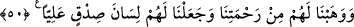

her birini peygamber yaptık, sadece bir kısmını değil.
50. Onlara rahmetimizden lütfettik ve onlara yüce ve haklı bir şöhret verdik.
“Onlara rahmetimizden lütfettik” yani âlemlerden hiçbir kimseye verilmeyen dînî ve
dünyevî hayrı onlara verdik “ve onlara yüce ve haklı bir şöhret” güzel ve yüksek bir
övgü “verdik.” Yani, İbrâhim (a.s.)’ın: “Sonrakiler arasında hayırla anılmamı
sağla!” (eş-Şuarâ, 26/84) duâsı kabul edildiğinden dolayı bütün insanlar onlarla
övünür ve onları överler.
Bilesin ki bu âyetlerde bâzı işaretler vardır:
1- Yumuşaklık ve güzel ahlâk: Hakkâ çağıran kimsenin yumuşak olması gerekir. Çünkü
sertlik, dinleyen kimsenin yüz çevirmesini gerektirir. Bir hadîste şöyle buyrulmuştur:
“Allah Teala, İbrahim’e şöyle vahyetti: “Ey Halil! Kâfirlerle beraber de olsa
ahlâkını güzel tut ki, iyilerin girdiği yere (ulaştığı mertebeye) ulaşasın. Çünkü Benim
arşımın altında gölgelendireceğime, mukaddes bahçede oturtacağıma ve civârıma
yaklaştıracağıma dâir önceden verdiğim söz, ahlâkını güzelleştiren kimse
hakkındadır.”[22]
Sâib şöyle demiştir:
Geçti ömür yine de sözünü yumuşak eylemedin sen
Ne elde ettin bu değirmen gibi olan dişlerden sen
2- Tâbi Olmak: Ebû’l-Kâsım demiştir ki: “Doğruya götüren yol uymakla (tâbi
olmakla) olur. Derecesi en yüksek olan kimse, Kur’an’a; onun altında olanlar, Hz.
Peygamber’e; onun altında olanlar, sahâbeye; onların da altında olanlar ise velîlere ve
Allâh’ı bilen âlimlere uyarlar. Çünkü Allâh’a götüren en sağlam yol, tâbi olmaya
dayanan yoldur.
Sehl b. Abdullah şöyle demiştir: “Nefse en ağır gelen şey, (başkasına) uymaktır.
Çünkü başkasına tâbi olmakta nefse bir nefes ve rahat yoktur.”
3- Uzlet: Ebû’l-Kâsım demiştir ki: “Dünya ve âhirette maddî ve mânevî esenlik
isteyen kimse kötü yakınlarından ve kötü dostlarından uzlete çekilsin (uzak dursun). O
kişi için bu, ancak Allâh’a sığınmak, O’na yalvarmak ve onlardan ayrılma konusunda
başarıya ulaştırması için Rabb’ine duâ etmekle mümkün olur. Çünkü “Kişi sevdiği ile
beraberdir.”[23]
Büyüklerden birisi şöyle demiştir: “Uzlet dilin susmasına sebeptir. İnsanlardan uzak
kalan, konuşacak kimse bulamaz. Bu da onu susmaya götürür. Uzlet iki kısımdır:
Birincisi müridlerin uzletidir ki, başkalarından bedenleriyle ayrılmaları şeklinde olur.